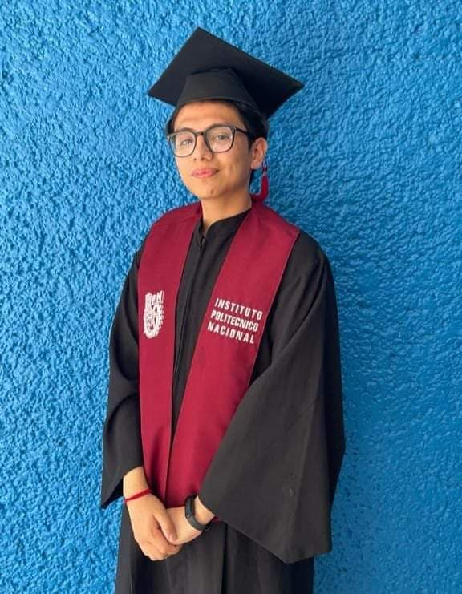

Zamarripa Altamirano Andres
Estudiante del Cecyt 3
Esta página se realizó para la materia de animación 3D con el fin de mostrar informacion sobre el proyecto que se solicita llevar a acabo en la materia. Actualmente estoy cursando el sexto semestre de la vocacional en el grupo 6IM7 en la especialidad Técnico en computación